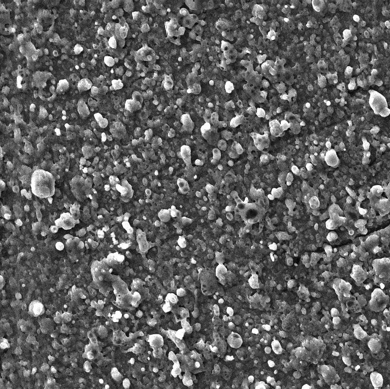

Titan (Ti)
V přírodě se vyskytuje ve vyvřelé hornině ilmenitu FeTiO3 (titaničitan železnatý).
Ti je kovový prvek mimořádných vlastností. Vyniká zejména nejvyšším poměrem ze všech kovů mezi vysokou pevností
a nízkou hustotou. Je schopen extrémní tepelné zátěže (teplota tání 1668 ºC) a při zachování vysokých
mechanických vlastností. Vykazuje také značnou chemickou odolnost a vysokou biokompatibilitu. Mezi jeho nevýhody
patří vyšší cena a obtížná obrobitelnost. Titan je alotropický kov, krystalizující v hexagonální a kubické (nad
882 ºC) krystalické mřížce. Vhodnou morfologií a chemickou aktivací povrchovou titanu, lze vytvořit materiál
příznivý pro růst kostní tkáně.
Členitá a porézní morfologie titanového povrchu
Výzkumy posledních let prokázaly, že pro růst kostních buněk není vhodný hladký, ale spíše členitý, nerovný nebo
dokonce porézní povrch. Výhody porézního povrchu představuje nejen vhodná morfologie, která se přibližuje
morfologii kosti (trámčiny), ale porézní strukturou titanu se můžeme také více přiblížit mechanickým vlastnostem
přirozené kosti (výhodou je zejména vhodné snížení tuhosti titanových implantátů). Pro vrůstání kostní tkáně se
jeví jako nejvhodnější otevřené póry rozměrech cca 500 µm. Důležitá není jen morfologie na úrovni mikrometrů,
ale také členitost povrchů v měřítku nanometrů.
Bioaktivní skla
(Bio)skla jsou speciálně navržené typy skel na bázi oxidu křemičitého, kde se trojrozměrná síť SiO2 modifikuje
přidáním oxidů Na2O, CaO a P2O5. Klíčové vlastnosti chemického složení je odlišují od tradičních
sodno-vápeno-křemičitých skel: (1) nižší podíl SiO2 než 60%, (2) vyšší obsah Na2O a CaO, (3) vyšší poměr
CaO:P2O5.
Tyto chemické vlastnosti činí povrch skel vysoce reaktivní v prostředí vodného média.
Bioaktivní sklo, s podílem 42-53% SiO2 vytváří vazbu s kostí velmi rychle (během několika dní) a také tvoří
přilnavou vazbu s měkkou tkání. Vyšší podíl SiO2 (˃ 55%) postupně zhoršuje pojivou schopnost (bio)skel s živou
kostní tkání.
Mechanismus spojování bioaktivního skla s kostí je komplexní proces, který probíhá tvorbou vrstvy
hydroxy-karbonátu apatitu (HCA) v průběhu postupného rozpouštění povrchu (bio)skla. HCA je svým složením podobný
kosti a probíhá tak vzájemná interakce s kolagenovými vlákny v mezibuněčné hmotě. Biologicky aktivní ionty
křemíku a vápníku, které jsou postupně uvolňovány z povrchu (bio)skla zvyšují expresi mitogenního růstového
faktoru kostních buněk. Ionty tak podporují pozitivní účinek buněk při jejich proliferaci a diferenciaci, což
vede k přímé regeneraci kosti.



Bioaktivní nanočástice
Růstu kostních buněk může značně pomoci pokrytí povrchu materiálu bioaktivními nanočásticemi. Malá velikost
nanočástic přináší velký měrný povrch, který zvyšuje aktivitu částic. Tyto částice potom mohou sloužit jako
zárodky pro rychlejší růst kostních buněk. Z hlediska chemického složení vhodné bioaktivní částice obsahují
prvky jako jsou např. vápník, fosfor, křemík. Vysokou bioaktivitu může vykazuje např. hydroxyapatit nebo titanát
vápenatý. Krystalická forma materiálů je zpravidla bioaktivnější, než amorfní stav.